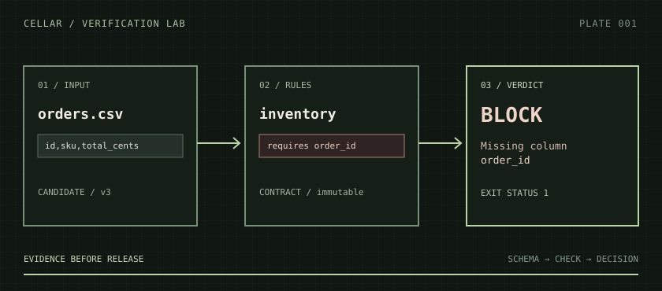

Developer infrastructure / Java 21
Find the failure before release.
Cellar Studio builds developer tools that test fragile software boundaries. Start with CSV compatibility checks, then see our systems research.
order_id, sku, total_centsid, sku, total_centsorder_idEXIT 1Product directory
Tools for the problems engineers find too late.
A working CSV checker, a downloadable desktop pilot, and focused research at different stages. Every project's maturity is labeled.
8 projects
Cellar Guard
Catch a changed CSV contract before a customer import breaks.
Open the checkerBuildClinic
Turn noisy build logs into specific failure explanations.
Read the product briefClauseCraft
Surface document patterns that need human review.
Read the product briefPlanCliff
Investigate query-plan changes that cause latency cliffs.
Read the research planCrashCheck
Explore storage guarantees under unexpected termination.
Read the research planDeadlock Sentinel
Detect circular lock waits in Java thread-dump snapshots.
See the trace demoCellar Learn
Make algorithm behavior visible through interactive lessons.
Read the product briefCellar SpaceFix
Move personal files to a spare drive and verify each copy before recycling the originals.
Get SpaceFixNo projects match that search. Try another engineering term.
Engineering method
A tool is only useful when it shows its evidence.
Our common approach: reproduce the failure, explain the affected boundary, and give the engineer a result they can verify.
A contract, lock dependency or storage invariant.
Use concrete input and repeatable conditions.
Report the failure and its likely consequence.
